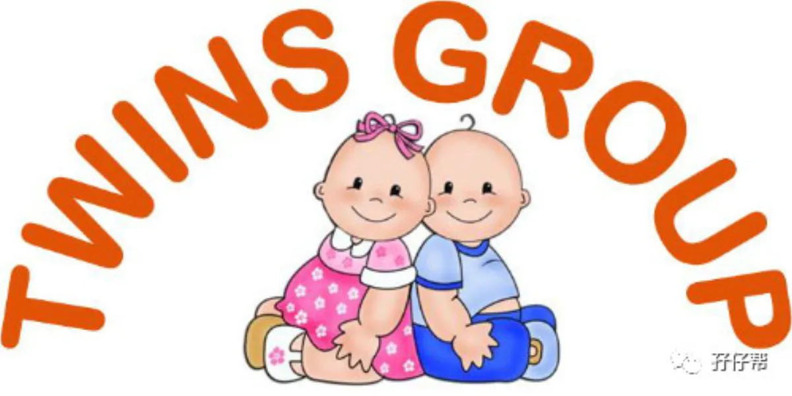

文|圆圈妈
图|来自网络，侵删
“圆圈妈妈，你好…”
“入群…”
“群主拉我入群…”
“在吗？…”
“我是**，我要入群…”
“我老公/老婆要我加你入群…”
“…”
隔三差五，我就会收到一堆堆诸如以上的信息，对不起，我会当做没看见！不是我没空，而是我真的不知道要拉你去哪个群！
本期推文是篇入群扫盲帖，以Q&A方式回答关于双胞胎育儿群的常见问题。
【01】
孖仔帮有多少个双胞胎育儿交流群？
孖仔帮目前有12个微信社群：
孕育群①②（仅限孕中的双胞胎妈妈，宝爸勿入，注：孕32周以上可申请提前进入养育群）
养育群①②③（仅限已生的双胞胎妈妈，宝爸勿入）
教育群①（仅限家有双胞胎一岁以上，宝爸宝妈均可入）
闲置群①（仅限双胞胎家庭，宝爸宝妈均可入）
爸爸群①（仅限双胞胎爸爸，宝妈勿入）
同城群/北京，上海，广州，深圳（仅限双胞胎家庭，宝爸宝妈均可入）
【02】
孖仔帮双胞胎育儿微信社群的群主是谁？
群主有两个微信号：圆圈妈（sgguy-com）和孖仔帮（twinsbang1），只需要添加其中一个微信号即可，不需要两个都添加！
建议优先选择微信号孖仔帮（twinsbang1），因为圆圈妈（sgguy-com）快满5000人了，加不上了！
顺便解释下：那个专门踢人的机器人是谁？
“机器人”不是机器，是人，也是一位双胞胎妈妈！是社群管理员之一，志愿维护群秩序！
在此，发起一则招募信息：欢迎更多有热心，有爱心，有空闲时间，喜好唠嗑的宝爸宝妈们也加入到社群管理员的行列，共同营造和谐良好的社群环境！
【03】
如何入群？
第一步：关注孖仔帮微信公众号，对话框内输入一段简单自我介绍，举个例子：
我是双胞胎妈妈，坐标深圳，家有双胞胎男孩，6个月，一人带俩娃水深火热中，急需组织的帮助和指导，特申请入群寻求带俩娃攻略。
我是双胞胎准妈妈，坐标北京，预产期2020年5月，单绒双羊，孕吐厉害，特申请入群找安慰！
第二步：添加微信号“twinsbang1”，备注“申请入群”！
第三步：把关注截图+自我介绍，发送给twinsbang1即可，诸如“你好？”“在吗？”“/微笑表情”就不需要了！此刻心急如焚的你还是越简单粗暴越好！
第四步：静候群聊邀请链接。
温馨提示：
自我介绍必须涵盖以下信息：你是宝爸OR宝妈？所在地区？入群主要目的？若在孕中，请告知预产期及绒毛膜性，若已生娃，请告知俩娃性别年龄。若以上信息不全，将不予入群！
最关键的就是：仅限双胎，谢绝单胎！
在此解释下：不是不欢迎单胎，而是没有共同话题，入群意义不大！
【04】
为什么要自我介绍？
你知道我是双胞胎圆圈妈妈，可是我却对你一无所知，我觉得很不公平嘢！初次见面，是不是得自我介绍下呢？
最主要是，你一点也不吃亏！
12个社群，每个社群讨论主题都不一样，若我知道你的情况，我会更精准地把你分配到相应群组。
比如你是单绒单羊，那么去孕期群2 会更合适，那里有更多跟你有同样情况的孕妈！你的抱团取暖会更加暖和些！
比如你家的双胞胎刚满月，那最好去养育群3，那里有一大波跟你一样刚卸货不久，正在水深火热中的辣妈们。
留下你的坐标信息，也是为了后续开通更多双胞胎同城群做数据储备，方便大家组织同城线下交流活动！
什么？担心隐私泄露？
好吧！….！建议先脑补下何谓“隐私”，再决定是否申请入群！
【05】
我可以同时加入多个群组吗？
如条件符合，当然可以！举例：
你是宝妈，俩娃12个月，可加入养育群，教育群，闲置群，倘若你坐标北京，还能加入北京站的双胞胎父母育儿群。
你是宝爸，坐标深圳，媳妇尚在孕中，可加入爸爸群，闲置群，深圳站的双胞胎父母育儿群。
还有更人性化的是，若你在喂养群1，可你认识的姐儿们妹儿们在喂养群2，可找群主申请，说明缘由，去你想去的群组。
注意：请事先告知你的意向群组，不然，一般默认拉去孕育群或养育群。
【05】
我能去教育群吗？
教育群的准入年龄是1岁以上，不建议孕中的你加入教育群提前预热，娃还没生就对他们的教育操心操肺，这并不是个明智之举！
有时候知道太多，焦虑更多，对你们娘仨没啥好处，专心怀孕才是上上策！
这也是为何我建议你最好根据双胞胎的实际年龄入相应群组的原因！每个群讨论主题都不一样，群成员也不一样。
如你想了解双胎孕期注意事项，很显然不适合在教育群咨询，那个阶段的父母们可能更侧重于孩子的教育方面。
当然，不表示没有人回答你，只是概率较低，得到的帮助会更少，但倘若这个问题放在孕期群，你将会得到更多可靠，有趣，有价值的信息。
我们入群来探讨育儿经验，无非就是图这点：在有限时间内，快速得到自己想要的答案。
因此，真心希望大家入群时跟群主如实反馈你的信息，到属于自己的群组去！孖仔帮已经给您精准定位好了，为何不阳光灿烂一下呢？
【06】
我为什么无缘无故被踢出群了？
请扪心自问：
1：发广告 ？
2：长期不发言 ？
3：未按规定修改群昵称？
4：调戏“机器人”（社群管理员）？
4：其他...?
若以上都没有，请@圆圈妈或@孖仔帮说明情况!据悉，双胞胎妈妈的孕傻年限是12年，圆圈妈目前正好处于高峰期！犯傻的概率较高，请大家多多谅解哈！
【07】
如何申请再次入群？
申请流程如下：
1：检讨自己为何被踢出群？
2：请回答一个问题：养育双胞胎，你最崩溃的瞬间/最幸福的瞬间？限50--100字！
3：发送给孖仔帮公众号（后台对话框内输入），静候群聊邀请链接。
注意：不接受“一言不合发红包”的土豪申请入群模式！群规在上，红包让道！请严格按照以上申请流程执行！
倘若觉得红包太多，无处安放，你可以随意找到孖仔帮公众号的一篇原创文章，发起“文章赞赏”！金额多少看你心情哈！
【08】
我家有双胞胎，做微商，可以加入吗？
微商怎么了？一样靠自己的能力养家糊口，圆圈妈也是微商！
在此，想跟此类职业的妈妈们（应该没有宝爸干这行吧）说一句：辛苦了！怀孕了生娃了，还要为生计奔波忙碌！女人不易做，双胎妈妈更艰难！
但我们不能如此盲目，毕竟在这样的社群还是与孕期育儿经验交流为准，这样随意丢一个广告链接怕是连你也觉得尴尬至极！
最主要是，这样的推广效果并不好，还随时会被机器人踢走，以至于脱离了组织！失去一大波跟你一起在双胎育儿路上浴血奋战的战友！
为避免机器人的工作量加大，还被不明原因攻击，针对这类群体，我的处理方案是：招安！
若你是双胎妈妈，正在从事母婴方面的产品或服务，如代理纸尿裤，宝宝保险等，请联系我，孖仔帮公众号的次条会给您开通专属绿色通道，为你的产品或服务做推广宣传。
有条件吗？
当然！请用文字+图片分享出你的双胞胎故事，限1500--2000字以内！Word档发给圆圈妈！你的养育双胞胎故事将有机会发布在孖仔帮公众号上，与众多双胞胎家庭一起见证孩子们的成长！
条件太苛刻了？写不出来？
PLS！双胎那么多芝麻绿豆的事，随便写就是一堆！怎么可能写不出来？
实在不会写？
OK！请联系文思如尿崩的圆圈妈，给你列提纲！免费指导！
最后，来一个比较尖锐的问题！圆圈妈建那么多群图啥？有钱赚吗？
经常有很多人问我，为什么要建那么多双胞胎群，有什么目的，能赚钱吗？这里统一回复下！
没钱赚（在双胞胎爸爸群抢到过几次红包，不知道这算不算？），还很累！更不敢发广告！
因为是群主，要高风亮节！要两袖清风！要顾全大局！要起模范带头作用！要…
反正！我就是想改群规了！因此发起这个意见征集：
对于群里发广告，你怎么看！？
你对现有群规深恶痛绝吗？
借你一百个胆子，说出你心目中的群规长什么样？
还有人建议开放更多主题的群组，如：
二胎双胞胎妈妈群
双胞胎育儿同城群（开放更多城市：长沙，杭州，福州...）
双胎妊娠疑难杂症交流群
双胞胎专属辅食群
….
你还想到哪些主题群？说吧！我在听！
以上意见征询，请在留言区写下你的宝贵建议，感谢支持与分享！
有你们在，真好！
养育双胞胎的路上，我不孤单！
-END-
今日互动话题
#你被移入双胞胎育儿交流群了吗#
评论区聊一聊呗！
一关注孖仔帮一
阅读原文
